This Chapter Covers
- The reasons for using attention mechanisms in neural networks
- A basic self-attention framework, progressing to an enhanced self-attention mechanism
- A causal attention module that allows LLMs to generate one token at a time
- Masking randomly selected attention weights with dropout to reduce overfitting
- Stacking multiple causal attention modules into a multi-head attention module
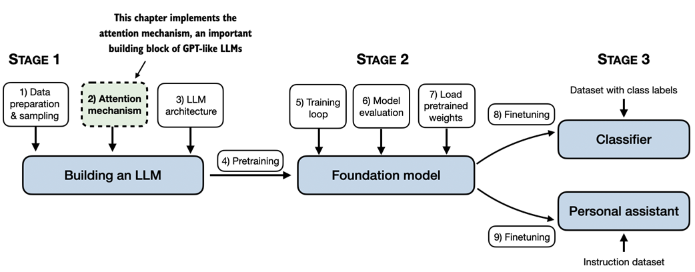
From the book (Raschka, 2025)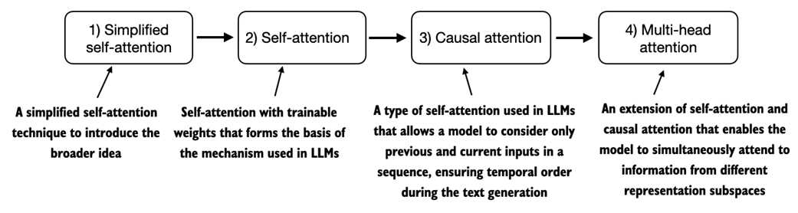
From the book (Raschka, 2025)3.1 The Problem with Modeling Long Sequences
Before diving into self-attention, consider the problem with pre-LLM architectures that do not include attention mechanisms. In language translation, we cannot simply translate word by word due to grammatical differences between languages.
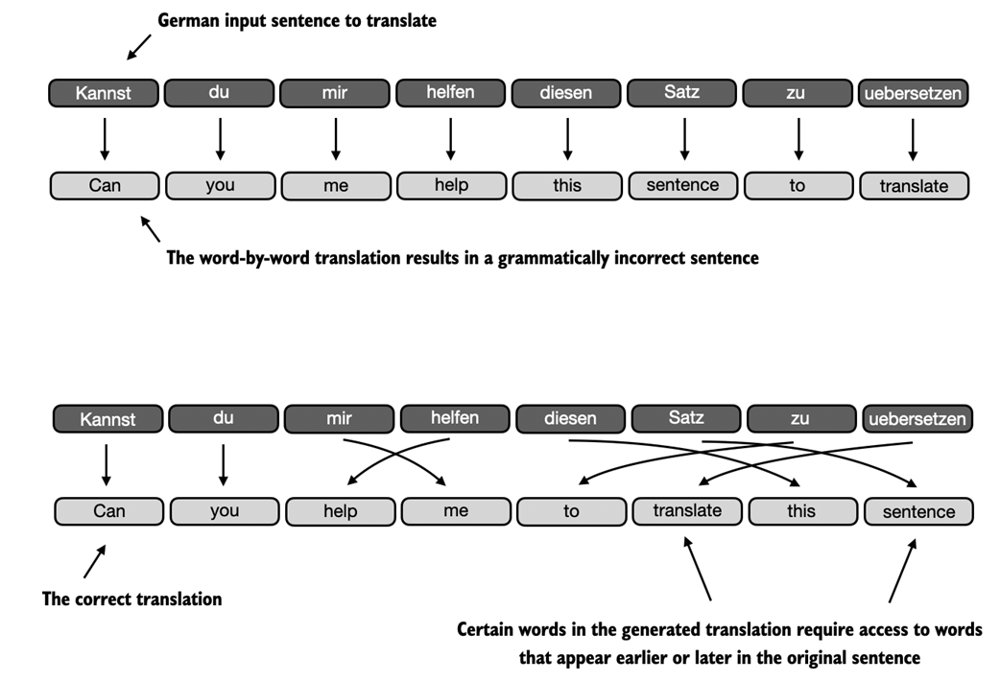
From the book (Raschka, 2025)Encoder-Decoder Architecture
- The encoder reads and processes the entire text; the decoder produces the translated text
- Before transformers, recurrent neural networks (RNNs) were the most popular encoder-decoder architecture
- The encoder processes input sequentially, updating its hidden state at each step
- The decoder takes the final hidden state to begin generating the translated sentence, one word at a time
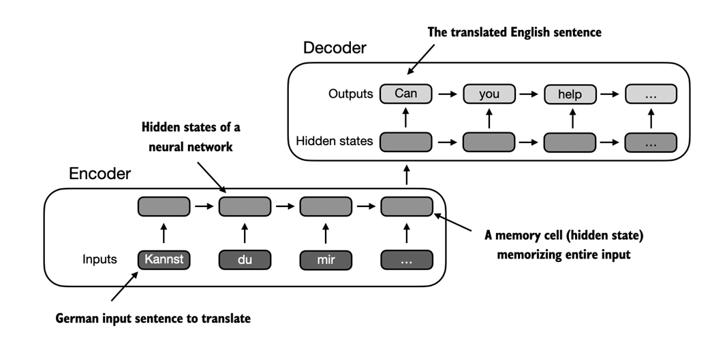
From the book (Raschka, 2025)3.2 Capturing Data Dependencies with Attention Mechanisms
RNNs work fine for short sentences but struggle with longer texts because they must compress the entire encoded input into a single hidden state. In 2014, researchers developed Bahdanau attention, which modifies the encoder-decoder RNN so the decoder can selectively access different parts of the input at each decoding step.
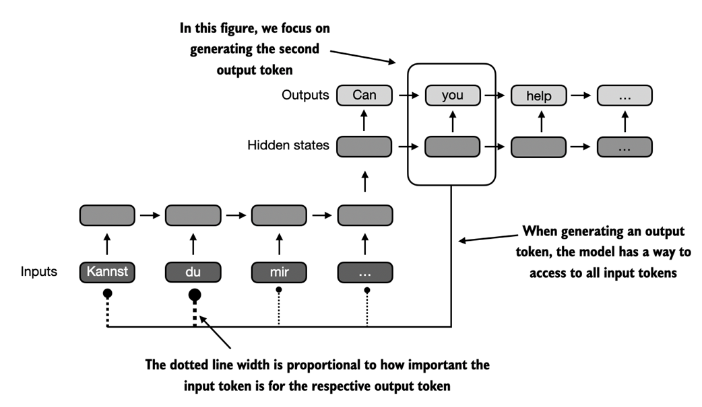
From the book (Raschka, 2025)Only three years later, researchers found that RNN architectures are not required and proposed the original transformer architecture, including a self-attention mechanism inspired by Bahdanau attention.
3.3 Attending to Different Parts of the Input with Self-Attention
3.3.1 A Simple Self-Attention Mechanism without Trainable Weights
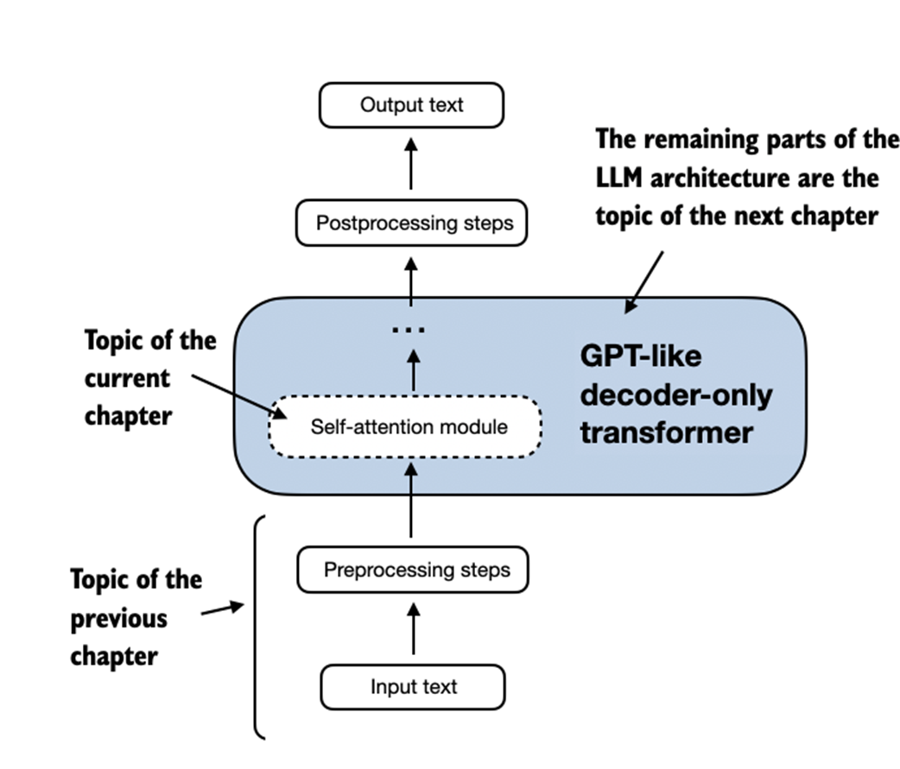
From the book (Raschka, 2025)import torch
inputs = torch.tensor(
[[0.43, 0.15, 0.89], # Your (x^1)
[0.55, 0.87, 0.66], # journey (x^2)
[0.57, 0.85, 0.64], # starts (x^3)
[0.22, 0.58, 0.33], # with (x^4)
[0.77, 0.25, 0.10], # one (x^5)
[0.05, 0.80, 0.55]] # step (x^6)
)
Step 1: Compute Attention Scores (Dot Products)
query = inputs[1] # The second input token serves as the query
attn_scores_2 = torch.empty(inputs.shape[0])
for i, x_i in enumerate(inputs):
attn_scores_2[i] = torch.dot(x_i, query)
print(attn_scores_2)
# tensor([0.9544, 1.4950, 1.4754, 0.8434, 0.7070, 1.0865])
Step 2: Normalize to Obtain Attention Weights
# Using softmax for normalization (preferred in practice)
attn_weights_2 = torch.softmax(attn_scores_2, dim=0)
print("Attention weights:", attn_weights_2)
# tensor([0.1385, 0.2379, 0.2333, 0.1240, 0.1082, 0.1581])
print("Sum:", attn_weights_2.sum()) # tensor(1.)
Step 3: Compute the Context Vector
query = inputs[1]
context_vec_2 = torch.zeros(query.shape)
for i, x_i in enumerate(inputs):
context_vec_2 += attn_weights_2[i]*x_i
print(context_vec_2)
# tensor([0.4419, 0.6515, 0.5683])
3.3.2 Computing Attention Weights for All Input Tokens
Now we extend the computation to calculate attention weights and context vectors for all inputs, using efficient matrix multiplication:
# Step 1: All attention scores via matrix multiplication attn_scores = inputs @ inputs.T # Step 2: Normalize each row attn_weights = torch.softmax(attn_scores, dim=-1) # Step 3: All context vectors all_context_vecs = attn_weights @ inputs print(all_context_vecs) # tensor([[0.4421, 0.5931, 0.5790], # [0.4419, 0.6515, 0.5683], # [0.4431, 0.6496, 0.5671], # [0.4304, 0.6298, 0.5510], # [0.4671, 0.5910, 0.5266], # [0.4177, 0.6503, 0.5645]])
3.4 Implementing Self-Attention with Trainable Weights
The self-attention mechanism used in LLMs is also called scaled dot-product attention. The most notable difference from the simplified version is the introduction of weight matrices (Wq, Wk, Wv) that are updated during model training. These matrices project embedded input tokens into query, key, and value vectors.
3.4.1 Computing the Attention Weights Step by Step
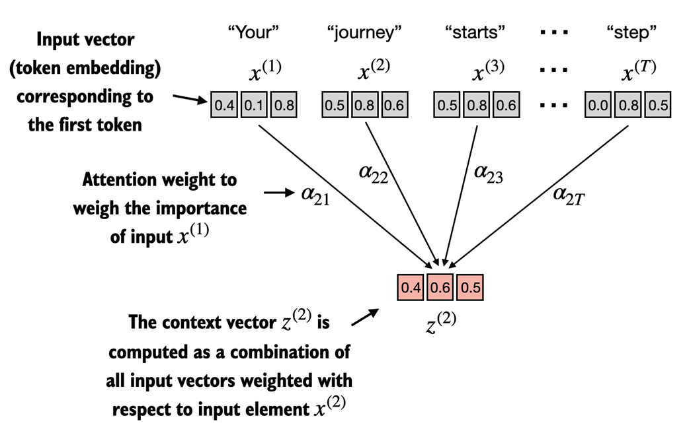
From the book (Raschka, 2025)x_2 = inputs[1] # The second input element d_in = inputs.shape[1] # Input embedding size, d=3 d_out = 2 # Output embedding size torch.manual_seed(123) W_query = torch.nn.Parameter(torch.rand(d_in, d_out), requires_grad=False) W_key = torch.nn.Parameter(torch.rand(d_in, d_out), requires_grad=False) W_value = torch.nn.Parameter(torch.rand(d_in, d_out), requires_grad=False) query_2 = x_2 @ W_query # tensor([0.4306, 1.4551]) keys = inputs @ W_key # Shape: [6, 2] values = inputs @ W_value # Shape: [6, 2]
Scaled Attention Scores
attn_scores_2 = query_2 @ keys.T # tensor([1.2705, 1.8524, 1.8111, 1.0795, 0.5577, 1.5440]) d_k = keys.shape[-1] attn_weights_2 = torch.softmax(attn_scores_2 / d_k**0.5, dim=-1) # tensor([0.1500, 0.2264, 0.2199, 0.1311, 0.0906, 0.1820])
Computing the Context Vector
context_vec_2 = attn_weights_2 @ values print(context_vec_2) # tensor([0.3061, 0.8210])
3.4.2 Implementing a Compact Self-Attention Python Class
import torch.nn as nn
class SelfAttention_v1(nn.Module):
def __init__(self, d_in, d_out):
super().__init__()
self.W_query = nn.Parameter(torch.rand(d_in, d_out))
self.W_key = nn.Parameter(torch.rand(d_in, d_out))
self.W_value = nn.Parameter(torch.rand(d_in, d_out))
def forward(self, x):
keys = x @ self.W_key
queries = x @ self.W_query
values = x @ self.W_value
attn_scores = queries @ keys.T
attn_weights = torch.softmax(
attn_scores / keys.shape[-1]**0.5, dim=-1)
context_vec = attn_weights @ values
return context_vec
class SelfAttention_v2(nn.Module):
def __init__(self, d_in, d_out, qkv_bias=False):
super().__init__()
self.W_query = nn.Linear(d_in, d_out, bias=qkv_bias)
self.W_key = nn.Linear(d_in, d_out, bias=qkv_bias)
self.W_value = nn.Linear(d_in, d_out, bias=qkv_bias)
def forward(self, x):
keys = self.W_key(x)
queries = self.W_query(x)
values = self.W_value(x)
attn_scores = queries @ keys.T
attn_weights = torch.softmax(
attn_scores / keys.shape[-1]**0.5, dim=-1)
context_vec = attn_weights @ values
return context_vec
Using nn.Linear instead of nn.Parameter(torch.rand(...)) provides an optimized weight initialization scheme, contributing to more stable and effective model training.
3.5 Hiding Future Words with Causal Attention
Causal attention (also known as masked attention) restricts a model to only consider previous and current inputs when processing any given token. This is crucial for language modeling, where each word prediction should only depend on previous words.
3.5.1 Applying a Causal Attention Mask
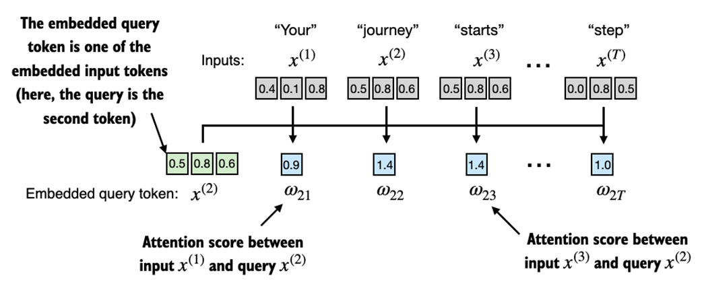
From the book (Raschka, 2025)The Efficient Approach: Mask Before Softmax
mask = torch.triu(torch.ones(context_length, context_length), diagonal=1) masked = attn_scores.masked_fill(mask.bool(), -torch.inf) attn_weights = torch.softmax(masked / keys.shape[-1]**0.5, dim=1) print(attn_weights) # tensor([[1.0000, 0.0000, 0.0000, 0.0000, 0.0000, 0.0000], # [0.5517, 0.4483, 0.0000, 0.0000, 0.0000, 0.0000], # [0.3800, 0.3097, 0.3103, 0.0000, 0.0000, 0.0000], # [0.2758, 0.2460, 0.2462, 0.2319, 0.0000, 0.0000], # [0.2175, 0.1983, 0.1984, 0.1888, 0.1971, 0.0000], # [0.1935, 0.1663, 0.1666, 0.1542, 0.1666, 0.1529]])
3.5.2 Masking Additional Attention Weights with Dropout
Dropout randomly sets hidden layer units to zero during training, preventing overfitting. In the transformer architecture, dropout is typically applied after computing the attention weights.
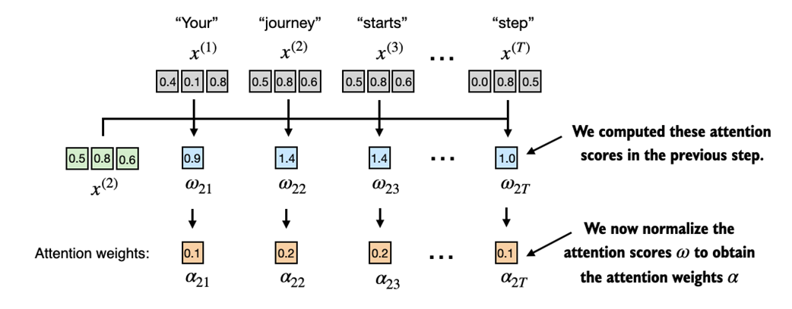
From the book (Raschka, 2025)3.5.3 Implementing a Compact Causal Attention Class
class CausalAttention(nn.Module):
def __init__(self, d_in, d_out, context_length,
dropout, qkv_bias=False):
super().__init__()
self.d_out = d_out
self.W_query = nn.Linear(d_in, d_out, bias=qkv_bias)
self.W_key = nn.Linear(d_in, d_out, bias=qkv_bias)
self.W_value = nn.Linear(d_in, d_out, bias=qkv_bias)
self.dropout = nn.Dropout(dropout)
self.register_buffer(
'mask',
torch.triu(torch.ones(context_length, context_length),
diagonal=1)
)
def forward(self, x):
b, num_tokens, d_in = x.shape
keys = self.W_key(x)
queries = self.W_query(x)
values = self.W_value(x)
attn_scores = queries @ keys.transpose(1, 2)
attn_scores.masked_fill_(
self.mask.bool()[:num_tokens, :num_tokens], -torch.inf)
attn_weights = torch.softmax(
attn_scores / keys.shape[-1]**0.5, dim=-1)
attn_weights = self.dropout(attn_weights)
context_vec = attn_weights @ values
return context_vec
The register_buffer call ensures the mask tensor is automatically moved to the appropriate device (CPU or GPU) along with the model, avoiding device mismatch errors.
torch.manual_seed(123)
context_length = batch.shape[1]
ca = CausalAttention(d_in, d_out, context_length, 0.0)
context_vecs = ca(batch)
print("context_vecs.shape:", context_vecs.shape)
# context_vecs.shape: torch.Size([2, 6, 2])
3.6 Extending Single-Head Attention to Multi-Head Attention
Multi-head attention divides the attention mechanism into multiple "heads," each operating independently. Each head learns different aspects of the data, allowing the model to simultaneously attend to information from different representation subspaces.
3.6.1 Stacking Multiple Single-Head Attention Layers
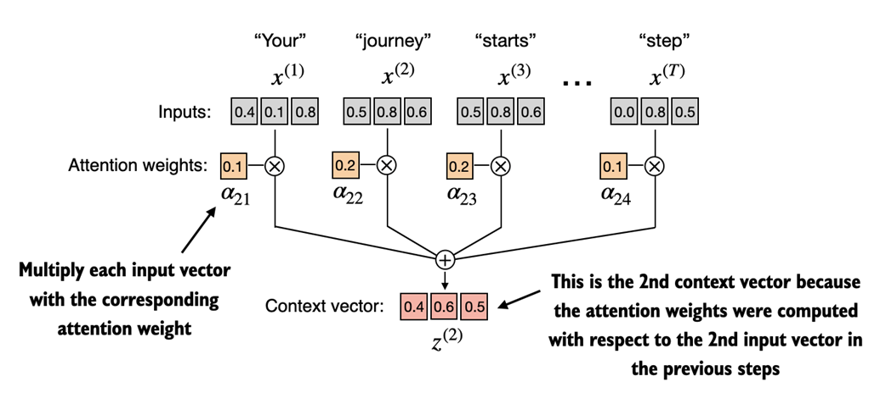
From the book (Raschka, 2025)class MultiHeadAttentionWrapper(nn.Module):
def __init__(self, d_in, d_out, context_length,
dropout, num_heads, qkv_bias=False):
super().__init__()
self.heads = nn.ModuleList(
[CausalAttention(
d_in, d_out, context_length, dropout, qkv_bias)
for _ in range(num_heads)]
)
def forward(self, x):
return torch.cat([head(x) for head in self.heads], dim=-1)
torch.manual_seed(123)
context_length = batch.shape[1]
d_in, d_out = 3, 2
mha = MultiHeadAttentionWrapper(
d_in, d_out, context_length, 0.0, num_heads=2)
context_vecs = mha(batch)
print("context_vecs.shape:", context_vecs.shape)
# context_vecs.shape: torch.Size([2, 6, 4])
# -- 2 heads x d_out=2 = 4-dimensional output
3.6.2 Implementing Multi-Head Attention with Weight Splits
A more efficient approach: instead of stacking separate CausalAttention objects, use a single MultiHeadAttention class that starts with multi-head projections and internally splits into individual attention heads via tensor reshaping.
class MultiHeadAttention(nn.Module):
def __init__(self, d_in, d_out,
context_length, dropout, num_heads, qkv_bias=False):
super().__init__()
assert (d_out % num_heads == 0), \
"d_out must be divisible by num_heads"
self.d_out = d_out
self.num_heads = num_heads
self.head_dim = d_out // num_heads
self.W_query = nn.Linear(d_in, d_out, bias=qkv_bias)
self.W_key = nn.Linear(d_in, d_out, bias=qkv_bias)
self.W_value = nn.Linear(d_in, d_out, bias=qkv_bias)
self.out_proj = nn.Linear(d_out, d_out)
self.dropout = nn.Dropout(dropout)
self.register_buffer(
"mask",
torch.triu(torch.ones(context_length, context_length),
diagonal=1)
)
def forward(self, x):
b, num_tokens, d_in = x.shape
keys = self.W_key(x)
queries = self.W_query(x)
values = self.W_value(x)
# Split into heads: (b, n, d_out) -> (b, n, num_heads, head_dim)
keys = keys.view(b, num_tokens, self.num_heads, self.head_dim)
values = values.view(b, num_tokens, self.num_heads, self.head_dim)
queries = queries.view(
b, num_tokens, self.num_heads, self.head_dim)
# Transpose: (b, num_heads, num_tokens, head_dim)
keys = keys.transpose(1, 2)
queries = queries.transpose(1, 2)
values = values.transpose(1, 2)
attn_scores = queries @ keys.transpose(2, 3)
mask_bool = self.mask.bool()[:num_tokens, :num_tokens]
attn_scores.masked_fill_(mask_bool, -torch.inf)
attn_weights = torch.softmax(
attn_scores / keys.shape[-1]**0.5, dim=-1)
attn_weights = self.dropout(attn_weights)
context_vec = (attn_weights @ values).transpose(1, 2)
context_vec = context_vec.contiguous().view(
b, num_tokens, self.d_out)
context_vec = self.out_proj(context_vec)
return context_vec
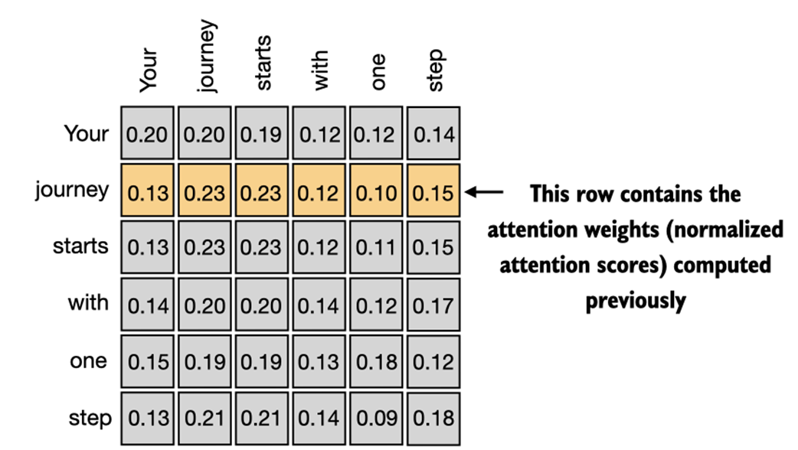
From the book (Raschka, 2025)torch.manual_seed(123)
batch_size, context_length, d_in = batch.shape
d_out = 2
mha = MultiHeadAttention(d_in, d_out, context_length, 0.0, num_heads=2)
context_vecs = mha(batch)
print("context_vecs.shape:", context_vecs.shape)
# context_vecs.shape: torch.Size([2, 6, 2])
Summary
- Attention mechanisms transform input elements into enhanced context vector representations that incorporate information about all inputs.
- A self-attention mechanism computes the context vector representation as a weighted sum over the inputs.
- In a simplified attention mechanism, the attention weights are computed via dot products.
- Matrix multiplications replace nested for loops for efficient and compact computation.
- In scaled dot-product attention (used in LLMs), trainable weight matrices compute intermediate transformations: queries, keys, and values.
- Causal attention masks prevent the LLM from accessing future tokens when reading text left to right.
- Dropout masks are added to zero-out attention weights and reduce overfitting.
- The attention modules in transformer-based LLMs involve multiple instances of causal attention (multi-head attention).
- A more efficient way of creating multi-head attention modules involves batched matrix multiplications with tensor reshaping.